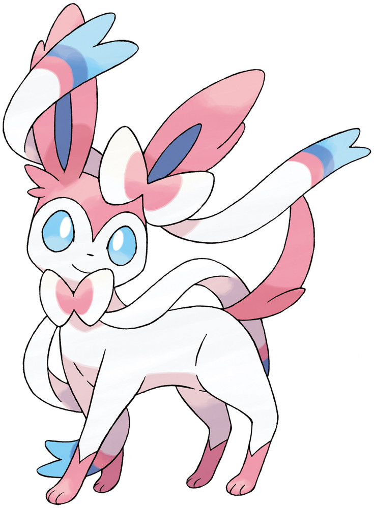
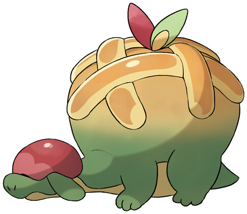
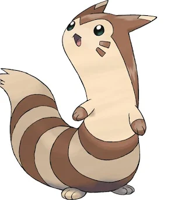

Favorites Gallery

👻 Hisuian Zoroark

🎀 Sylveon

🍎 Appletun

🦦 Furret

🐱 Maine Coon Cats

🍇 Grape Soda
These are some of my favorite Pokémon!
Welcome to my interactive portfolio website inspired by two of my favorite things: cats and waffles.
Pokémon • Digital Art • Online Reading • Gaming • Cats • Waffles
Hi! I'm Esohe. I enjoy coding, Pokémon, cats, waffles, and building creative projects. Explore the site to learn more about me, my skills, and my projects.
Hi! I'm Esohe, a sophomore in high school who enjoys being creative, learning new things, and spending time on my favorite hobbies. I love cats, waffles, french fries, Pokémon, and grape soda. When I'm not at school, you'll usually find me creating digital art on my iPad, reading online, or playing online games with friends. Pokémon has always been one of my favorite interests, and my top favorite Pokémon are Hisuian Zoroark and Sylveon.
Education: High School Student
Experience working with and helping kids in educational and community environments.
My projects reflect both my technical skills and my personal interests. I enjoy creating programs that are interactive, engaging, and centered around topics I am passionate about, such as Pokémon, anime, and creative problem-solving.
For GitHub Pages, keep johto-app-v2.html in the same repository folder as this portfolio.
Johto-App is a Pokémon team-building website designed to help players create stronger and more unique teams in the Johto region from Pokémon Gold, Silver, Crystal, HeartGold, and SoulSilver.
One of Johto's biggest challenges is its limited Pokémon distribution, which makes it difficult for players to build diverse teams. This project aims to solve that problem by providing information about Pokémon stats, abilities, typings, and team-building options in an easy-to-understand format.
Skills Used: Website Design, User Interface Development, Problem Solving, Project Planning, and Data Organization.
This project combines my love of Pokémon with my interest in coding and web development.
Cat Chat Bot is an interactive chatbot that allows users to communicate with a cat-themed virtual assistant.
The chatbot responds to user input and provides fun and engaging interactions through programmed responses. I created this project to explore how conversational programs work and to practice building programs that respond dynamically to users.
Skills Used: Python Programming, Conditional Statements, User Input Handling, Logic Design, and Interactive Programming.
This project helped me better understand how chatbots process information and respond to different situations.
The Anime List Project is an interactive program that helps users organize and view anime recommendations and personal favorites.
The project was designed to create a simple and user-friendly way to keep track of anime while practicing programming concepts related to organization, lists, and user interaction.
Skills Used: Python, Data Organization, Variables and Lists, User Interaction, and Program Structure.
While building this project, I learned how to design a program around a personal interest and make information easier for users to access and manage.
👻 Hisuian Zoroark

🎀 Sylveon

🍎 Appletun

🦦 Furret
🐱 Maine Coon Cats
🍇 Grape Soda
These are some of my favorite Pokémon!